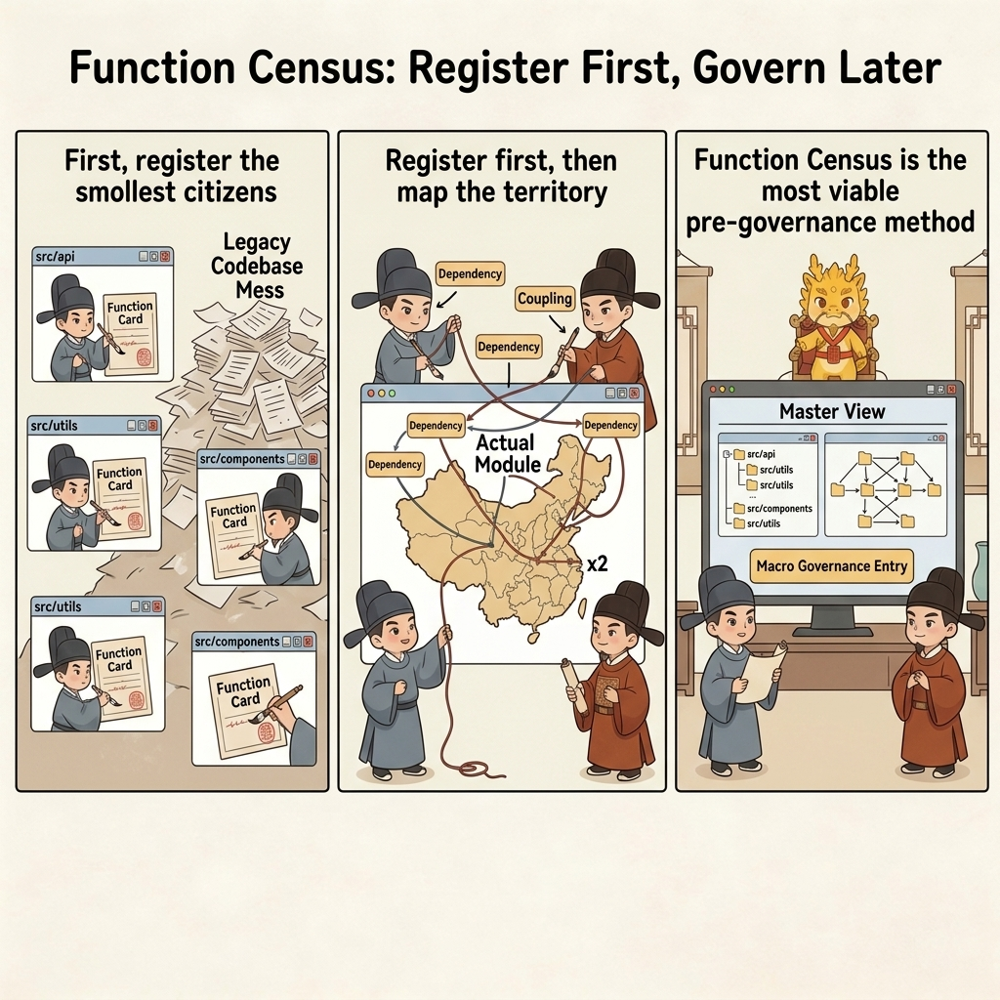
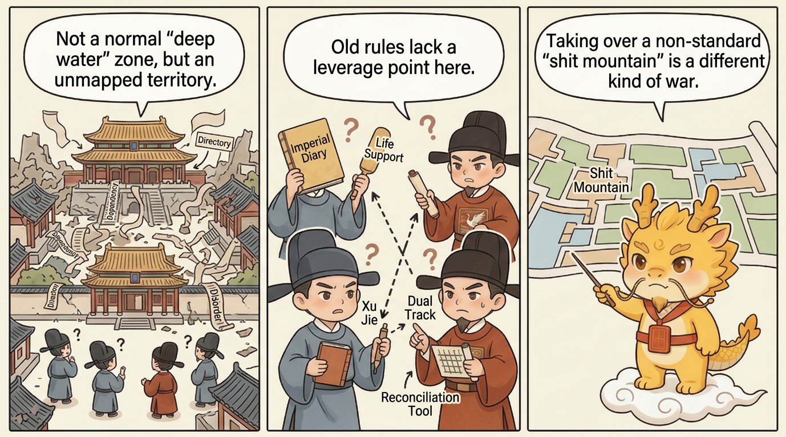
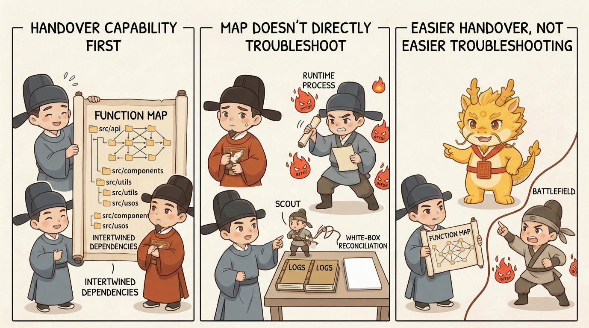

Deep Water
Boundaries And Unresolved Battlefields

Boundaries and Unresolved Battlefields
Table of Contents
- What This Page Solves
- Why Taking Over a Completely Undisciplined Legacy Mess Is a Different Kind of War
- Why the Earlier Rituals Still Are Not Enough Here
- The Most Viable Upstream Governance Method for Now: A Function Census
- Cost and Sample Boundaries
- Common Misunderstandings
- One-Line Conclusion
- Related Pages
What This Page Solves
By this point, most of Cyber-Ming-Protocol's core institutions are already standing:
- Why the executor and auditor must be separated
- Why the human must retain physical routing authority
- Why cognitive debt does not disappear by itself
- Why decayed windows need asynchronous renewal
- Why the mainline should not become a battlefield of shared dirty context
- Why high governance does not automatically imply low throughput
But a protocol is not truly mature if it only knows how to describe its victories. It also has to say honestly which battlefields it still has not won.
That is what this page is for.
If one sentence had to capture the largest unresolved problem right now, it would be this:
The hardest battlefield Cyber-Ming-Protocol still has to face honestly is not how to govern complex projects that still retain basic handles, but how to take over a long-disordered legacy mess that has almost no registries left.
So the real questions here are:
- What this protocol is currently good at, and what it is not good at
- Why taking over a fully undisciplined legacy system cannot be solved by simply copying the earlier rituals onto it
- Whether there is at least a preliminary upstream governance method today
- What that method can solve and what it cannot solve
- Where the boundaries of cost, sample count, and maturity still lie
The most important judgment to nail down first is this:
At the moment, this protocol is much closer to a mid-to-late-stage governance method than to a complete and mature takeover method for chaotic legacy systems.

That is not retreat. It is constitutional honesty.
Why Taking Over a Completely Undisciplined Legacy Mess Is a Different Kind of War
The earlier pages all assume that you still possess at least some minimal governance handles, such as:
- Readable Git history
- Locally trustworthy chronicles
- Naming and directories that are not yet completely detached from reality
- Some local boundaries that can still be extracted
- Chains that can still produce real red lights and green lights
As long as those things still exist, then even if the project is already complex, deep-water, and hard to change, this protocol can still begin imposing structure:
- You can split Atomic Execution Contracts
- You can run dual-track audit
- You can do white-box physical reconciliation
- You can renew or repay debt when necessary
But a truly ugly legacy system is often not merely "complex but still governable." Often not even the minimum governance unit has survived. Such systems commonly have many of these traits at once:
- A long history without fine-grained commits
- Documentation that is chaotic or nearly absent
- Names that are confused, and directories that sound like regions but are not real administrative boundaries
- Large amounts of shared state and hidden side effects
- Severe responsibility drift, where nominal module boundaries and factual boundaries no longer align at all
- New windows that are easily dragged off course by the dirty context of the entire old system
At that point, you are no longer dealing only with a deep-water project. You are dealing with unregistered territory.
The real difficulty is not that some bug is especially hard. The real difficulty is this:
You do not yet even have a map trustworthy enough to tell you how many provinces exist, who governs what, which boundaries are only place names, and which boundaries are real.
That is why this problem cannot simply be stuffed under the earlier pages. Most of those institutions assume at least one precondition: the system still preserves some minimal order that can be judged, recorded, and further partitioned into fiefs.
In a completely undisciplined legacy mess, even that foundational order may no longer exist.
Why the Earlier Rituals Still Are Not Enough Here
This does not mean the earlier rituals were wrong. It means the handles they assume often do not exist in this terrain.
First, Dual-Track Audit Needs Materials, but a Legacy Mess Often Lacks Materials First
Dual-track audit still matters, of course. The problem is that if you do not even have a minimum topographic map of the system, then what the executor and auditor each receive is simply a giant sea of chaotic code.
In that situation, audit easily degrades into one of two bad forms:
- It either criticizes in generic terms and never catches the real structural points
- Or it is forced to guess along with the executor
In other words, without a minimum registry, even dual-track lacks handles.
Second, Chronicles Are Extremely Powerful, but a Legacy Mess Often Lacks a Fine Enough Historical Record
High-frequency Git chronicles are one of the strongest memory devices in the entire protocol. But a long-disordered old project often lacks exactly that thing.
So the work you must do now is no longer "repay debt along an existing chronicle." It is closer to "first write a minimally readable local gazetteer for a land that lost its history."
Third, Renewal Can Detoxify a Window, but It Cannot Conjure a Land Registry Out of Thin Air
Seven Stars Renewal already told us what to do when a context window becomes toxic: reopen a clear position asynchronously.
But in a completely undisciplined legacy project, the problem is often not just that a given window is toxic. It is that:
- The project itself no longer has clear boundaries
- The old historical record is deeply incomplete
- Any new window can still be dragged into hallucination by the context of the entire legacy mess
Renewal can reduce window contamination. It cannot automatically generate a trustworthy map of the territory.
Fourth, What Is Really Missing Is Not a Stronger Agent, but Upstream Survey Work
This is the deepest divide between this battlefield and all the earlier ones.
In an ordinary deep-water project, you are often governing execution. In a legacy takeover, you are first governing governability itself.
Put differently, what is missing here is not immediate refactoring, immediate debugging, or even immediate feature work. What is missing is:
First re-register the smallest governable civic units of the old territory.
Only after that exists again do scouting, audit, debt repayment, renewal, and enfeoffment have a place to bite.
The Most Viable Upstream Governance Method for Now: A Function Census
Among the methods currently visible, I have not yet seen one that is both clearly more stable and clearly lower-cost while also elegantly skipping this step.
So the method that currently feels closest to practical is not asking one strong agent to swallow the entire legacy mess in one bite. It is performing a dumb but necessary survey first:
Treat functions as the smallest citizens of the project. Register them first, then talk about governance.
If this approach needs a name, the closest one is:
a function census.
Its spirit is simple. When a new dynasty takes over an old one, the first move is not rebuilding the palace. The first move is counting households and land. Legacy-system takeover is the same. First register the functions as citizens. Only then govern.
Step 1: Split the Land by Directory and Survey Function Records Across Multiple Windows in Parallel
The first layer here looks very much like a map phase.
Do not force one window to swallow the entire project. Split the system by directory, subsystem, or relatively independent region; open multiple windows; and let each one perform a local census.
Each window is responsible only for one territory and should first turn the functions in that territory into minimal registry cards, for example:
- Function name and path
- Direct responsibility
- Major inputs and outputs
- What it calls and what calls it
- Whether it has external side effects
- Whether it reads or writes shared state
- The nominal owning module and the factual owning module
- Current confidence level in the understanding
The goal at this layer is not to "understand the project." The goal is to force a first batch of minimum citizens to emerge from the chaotic sea of code.
Step 2: Open Relationship Windows and Use Bidirectional Links to Sort Dependencies, Coupling, and Functional Boundaries
This is the shuffle and local reduce phase.
Once those function registry cards exist, open a higher-level window that no longer reads the code by directory, but by relationship:
- Which functions depend on one another
- Which call chains form factual modules
- Which shared states bind supposedly independent regions together
- Which functions are hotspots, hubs, glue layers, or god functions
- Which directories are only place names and which ones are real administrative regions
Bidirectional-link thinking works especially well here, because the goal is not to write pretty documentation. The goal is to redefine:
- Who is coupled to whom
- Who is actually performing duties outside their supposed boundary
- Which boundaries are only illusions
- Which ones are genuinely sliceable governance boundaries
Step 3: Open a Final Overview Window and Generate the Macro Project Document and Governance Entry Points
Only after the local registries and relationship network exist at least in rough form is it worth opening the final overview window and writing the macro document for the project.
That layer is closer to the final reduce:
- What the factual module map of the current project really is
- Which system boundaries have already collapsed
- Which regions are best suited to scouting first, debt repayment first, or refactoring first
- Which places are fit for further enfeoffment and which places must never be cut blindly
- Which chain is most worth restoring first into a white-box governable state
Only at that point do you obtain something that looks less like hallucination and more like a territory map.
What It Improves First Is Takeover Ability, Not Direct Debugging Ability
This distinction needs to be stated heavily.

The greatest value of a function census is that it lets a territory with no registry start exposing minimum governance handles again. What it improves first is:
- Takeover ability
- Architectural intuition
- Divide-and-rule ability
- The foundation for later enfeoffment
But it does not directly guarantee that runtime problems become easy to debug.
Because real debugging still has to fall back to:
- Scouts
- Logs
- White-box physical reconciliation
- Real red lights and green lights
- External-system returns
Put differently, the census map can tell you who lives where, who is entangled with whom, and which territory looks most suspicious. It does not automatically tell you who stabbed the mainline last night.
So the more precise statement is:
A function census makes takeover easier. It does not automatically make debugging easy.
Its Other Value Is Training a Human's Early Governance Intuition
This point is also important, and not merely a side benefit.
Repeatedly performing function census, relationship summaries, and macro registration forces you to train a kind of skill that has rarely been taught explicitly:
- What really counts as the minimum governance unit
- What really counts as a factual boundary
- Which coupling is fake and which coupling is hard
- Which function only belongs to a nominal area and which function belongs there in factual terms
So this process is not only organizing the project. It is also training the taker's own architectural intuition and early governance ability.
In a totally disordered old project, that training is itself a valuable asset. Often what you are missing is not one more answer, but the first stable mind that knows how to ask the right question.
Cost and Sample Boundaries
The reason this upstream governance method can only be written today as "the most viable preliminary direction" rather than a mature protocol is also fairly clear.
First, It Is Not Cheap
Splitting territory across windows, surveying functions, summarizing relationships, and building a macro register is expensive work in its own right. It is not smooth. It is not light. It certainly does not feel like "throw it to one strong agent and let it handle the whole thing."
Second, It Is Still More an Upstream Governance Method Than a Complete Takeover Method
What it solves is this: how can territory with no registry start exposing minimum governance handles again?
What it does not yet solve completely includes things like:
- How to restore real runtime boundaries systematically after the registry exists
- How to detoxify cross-region shared state further
- Which renamings and module redistributions count as real refactoring rather than paper sorting
- How to distribute judgment load and organizational cost in large teams
Third, It Still Needs Richer Real Samples
This is another boundary that has to be admitted proactively.
At the moment, the idea already has explanatory power and operational value. But it still looks more like an upstream governance model taking shape than a stable low-cost answer that has already been validated across many legacy takeovers.
So the most important honesty this page must preserve is:
No clearly more stable, lower-cost upstream takeover method has yet appeared - but that does not mean the problem is solved.
Common Misunderstandings
First Misunderstanding: The Earlier Rituals Are Already Enough to Take Over Any Legacy Mess Directly
They are not. The earlier rituals are strong, but most of them assume the system still retains some minimal handles. A territory with no registry often needs an upstream governance layer first.
Second Misunderstanding: If You Open Enough Windows, You Will Automatically Understand the Legacy Mess
No. The value of multiple windows is that they reduce the hallucination risk of forcing one window to swallow the whole mess. They do not automatically create understanding. Without a census target and a clear governance granularity, more windows only generate more conflicting guesses.
Third Misunderstanding: A Function Census Is the Same as the Real Truth of the System
It is not. A census is first a static governance handle, not runtime truth itself. It helps with takeover, localization, and divide-and-rule. Final debugging still has to return to scouts, logs, and physical reconciliation.
Fourth Misunderstanding: If Functions Are the Minimum Citizens, Then Modules and Directories No Longer Matter
No. Functions are only the current easiest starting point for re-registering governable units. That does not make higher-level structures unimportant. Quite the opposite: one of the purposes of the function census is to regrow a factual module map in the end.
Fifth Misunderstanding: This Is Already a Mature Grand Solution for Legacy-System Takeover
Not yet. Right now it is closer to one of the most actionable upstream governance methods available than to a final answer.
One-Line Conclusion
What this page is really trying to nail down is not merely "where this protocol is still imperfect," but this:
The largest unresolved battlefield for Cyber-Ming-Protocol right now is how to take over a long-disordered old territory with almost no registry left. In that scenario, what must be restored first is not functionality, but governability itself.
And among the currently visible paths, the most actionable one still looks like this: first register the functions as citizens, then slowly rebuild boundaries, evidence, and sovereignty from there.